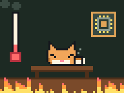

Сезон 2 Месяц 2 · Урок 5 · Процессорск
Как собирают ПК
Новый сезон начинается с железа в руках. Сначала учимся проверять совместимость, потом разбираем порядок сборки и первый запуск. А в конце урока вместо босса собираем настоящий компьютер командой. Он должен пройти POST, иначе Памятьвиль не спасти.
Мем недели
Собрал первый ПК, процессор 95 °C в простое

Плёнка с подошвы кулера: «Я тоже часть системы охлаждения»
Почему это смешно только до первой своей сборки, станет ясно во втором блоке.
Вопрос на разогрев. Друг купил процессор, плату, память и видеокарту «самые лучшие из того, что было в магазине». Дома оказалось, что процессор в плату не влезает. Как такое вообще возможно, если всё «для компьютера»? Запиши версию, проверишь после первого блока.
Компоненты и совместимость
Компьютер собирают из деталей разных производителей. Работают они вместе только потому, что все договорились о стандартах: форме разъёмов, размерах плат, напряжениях. Сборщик проверяет совместимость до покупки: вернуть процессор, который не подошёл, бывает сложнее, чем купить правильный.
Главный документ сборщика: страница характеристик платы и её инструкция (manual). Почти все ответы этого урока там.
Сокет: процессор и плата
Сокет это разъём процессора на плате. Он задаёт форму, число контактов и крепление. Процессор встаёт только в свой сокет: другой просто физически не войдёт.
| Сокет | Процессоры | Память | Особенности |
|---|---|---|---|
| AM4 | AMD Ryzen 1000–5000 | только DDR4 | Ножки на процессоре (PGA), их легко погнуть |
| AM5 | AMD Ryzen 7000, 8000, 9000 | только DDR5 | Контакты в сокете (LGA), крепления кулера от AM4 обычно подходят |
| LGA1700 | Intel Core 12, 13, 14 поколения | DDR4 или DDR5, зависит от платы | Одна плата поддерживает только один тип памяти |
| LGA1851 | Intel Core Ultra 200S | только DDR5 | Похож на LGA1700, но процессоры не взаимозаменяемы |
У Intel цифра в названии сокета это число контактов: в LGA1700 их 1700. В сокете LGA ножки находятся на плате, и они тоньше волоса. Одна погнутая ножка, и плата может не стартовать.
Подвох: совпавший сокет ещё не гарантия. Старая плата может не знать новый процессор, пока ей не обновят BIOS. Список поддерживаемых процессоров (CPU support list) лежит на сайте производителя платы. Многие платы умеют обновлять BIOS кнопкой BIOS Flashback даже без процессора.
Чипсет: что умеет плата
Чипсет это микросхема на плате, которая раздаёт дополнительные линии PCIe, порты SATA и USB. Сокет говорит, какой процессор встанет. Чипсет говорит, сколько всего можно подключить и можно ли разгонять.
| Уровень | AMD AM5 | Intel LGA1700 | Intel LGA1851 |
|---|---|---|---|
| Начальный | A620 | H610 | H810 |
| Средний | B650, B850 | B660, B760 | B860 |
| Старший | X670, X870 (E: больше PCIe 5.0) | Z690, Z790 | Z890 |
Буква в названии чипсета подсказывает уровень. Разгон процессоров Intel с буквой K разрешён только на платах Z. Для учёбы и игр средний уровень (B) почти всегда самый разумный выбор.
Память: DDR4 и DDR5 не взаимозаменяемы
У планок DDR4 и DDR5 одинаковое число контактов (288) и похожий вид. Но вырез-ключ стоит в разных местах, напряжение разное (1,2 В у DDR4 и 1,1 В у DDR5), а у DDR5 часть питания переехала прямо на планку. Поставить DDR5 в слот DDR4 нельзя физически, и это хорошо: ключ защищает от ошибки.
Плата поддерживает только один тип памяти. Тип пишут в характеристиках платы, а не процессора: у LGA1700 бывают платы и с DDR4, и с DDR5. Ещё одна строка, которую стоит прочитать: максимальный объём и список проверенных планок (QVL).
Число на планке, например DDR5-6000, это скорость передачи в мегатрансферах в секунду. Без настройки память стартует на стандартной безопасной частоте, обычно ниже. О том, как включить «паспортную» частоту, в третьем блоке.
В какие слоты ставить две планки, если на плате четыре слота, и почему соседние слоты это частая ошибка. Что такое двухканальный режим и сколько скорости он даёт.
Форм-фактор: плата и корпус
| Форм-фактор | Размер платы | Слоты памяти | Слоты PCIe |
|---|---|---|---|
| ATX | 305 × 244 мм | обычно 4 | до 7 |
| Micro-ATX (mATX) | до 244 × 244 мм | 2 или 4 | до 4 |
| Mini-ITX | 170 × 170 мм | 2 | 1 |
Отверстия под крепёж у этих форматов стандартные. Поэтому маленькая плата встаёт в большой корпус, а большая в маленький нет. Корпус ATX примет и mATX, и ITX.
Габариты: видеокарта и кулер в корпусе
Совпали разъёмы, но деталь может просто не поместиться. В характеристиках корпуса ищут три числа:
- Длина видеокарты, например «до 330 мм». Мощные карты бывают длиннее 330 мм. Передние вентиляторы и радиаторы водяного охлаждения съедают ещё 25–60 мм.
- Высота кулера процессора, например «до 165 мм». Башенные кулеры бывают 150–170 мм.
- Длина блока питания и место под радиатор водяного охлаждения, если он есть.
Ещё одна ловушка: высокие радиаторы на памяти иногда упираются в большой башенный кулер. Проверяют по таблице совместимости кулера.
Охлаждение: TDP кулера
Процессор превращает почти всю потребляемую энергию в тепло. Кулер должен уносить его с запасом. У кулеров пишут, сколько тепла они рассеивают, например «TDP 220 Вт». У процессоров пишут TDP (тепловой пакет), но под нагрузкой многие процессоры берут больше: у Intel это предел PL2, у AMD предел PPT. Поэтому кулер берут с запасом к реальному потреблению, а не к числу на коробке.
Нужно проверить и крепление: в комплекте кулера должны быть детали под твой сокет. Боксовый кулер из коробки процессора справляется с процессорами около 65 Вт, но шумит под нагрузкой.
Блок питания: мощность, 80 PLUS и разъёмы
Блок питания (БП) превращает переменный ток из розетки в постоянные 12, 5 и 3,3 В. Почти всё железо сейчас питается от линии 12 В. Слабый или дешёвый БП это частая причина зависаний под нагрузкой, а иногда и сгоревших деталей.
Мощность считают по самым прожорливым деталям: процессору и видеокарте. Блок не должен работать на пределе: под пиковыми нагрузками видеокарты на доли секунды берут намного больше своей паспортной мощности.
Как посчитать мощность блока питания для любой сборки: что складывать, какой запас брать и до какого номинала округлять. Почему «киловатт на всякий случай» тоже ошибка.
80 PLUS это сертификат КПД, а не мощности. Он говорит, сколько энергии из розетки доходит до компьютера, а сколько уходит в нагрев: Bronze около 85 %, Gold около 90 % при средней нагрузке. Чем выше КПД, тем холоднее и тише блок.
| Разъём | Куда | Важно |
|---|---|---|
| 24-pin ATX | Основное питание платы | Вставлять до щелчка защёлки |
| 8-pin EPS (CPU 4+4) | Питание процессора, у верхнего края платы | Мощные платы просят два. Не путать с PCIe 8-pin |
| PCIe 6+2 pin | Видеокарта | До 150 Вт на разъём, слот даёт ещё 75 Вт |
| 12V-2x6 (16-pin) | Новые видеокарты | До 600 Вт. Вставлять полностью, без резкого изгиба у разъёма |
| SATA power | HDD, SATA SSD, подсветка | Плоский, 15 контактов |
Модульный блок питания позволяет отстегнуть лишние кабели. Важно: модульные кабели от разных блоков не взаимозаменяемы, даже если разъём влез. Распиновка со стороны блока у производителей разная.
M.2: слоты и общие линии
Слотов M.2 на плате бывает от одного до пяти. Обычно первый слот (M2_1) подключён прямо к процессору и самый быстрый. Остальные идут через чипсет. Проверяют три вещи: длину (почти всегда 2280), протокол (NVMe, SATA или оба) и поколение PCIe.
Линий PCIe у чипсета меньше, чем разъёмов на плате. Поэтому некоторые разъёмы делят линии: в инструкции пишут, например, «если занят M2_3, порты SATA 5 и 6 отключаются» или «слот PCIe x4 работает как x2». Не прочитал, и диск «пропал».
Разбор: эта сборка совместима?
Найди все ловушки сам, прежде чем открыть ответ. Их тут несколько.
| Деталь | Что написано в характеристиках |
|---|---|
| Процессор | Ryzen 7 7700: сокет AM5, TDP 65 Вт, под нагрузкой до 88 Вт, есть встроенная графика |
| Плата | B650M: сокет AM5, Micro-ATX, 4 слота DDR5, 2 слота M.2, M2_2 делит линии с нижним слотом PCIe x4 |
| Память | 2 × 16 ГБ DDR4-3600 |
| Видеокарта | Длина 310 мм, до 220 Вт, питание: 1 × PCIe 8-pin |
| Кулер | Башня 160 мм, рассеивает до 180 Вт, крепления AM4/AM5 и LGA1700 |
| Корпус | Micro-ATX, видеокарта до 300 мм, кулер до 158 мм |
| Блок питания | 450 Вт, 80 PLUS Bronze, один кабель PCIe 8-pin |
| SSD | NVMe 2280 PCIe 4.0, 1 ТБ |
Проверить себя
- Сокет: AM5 и AM5, порядок.
- Память: ловушка. Плата на DDR5, а куплена DDR4. Планки не встанут. Нужна DDR5, например 2 × 16 ГБ DDR5-6000.
- Видеокарта в корпус: ловушка. 310 мм больше допустимых 300 мм. Нужен другой корпус или карта короче.
- Кулер в корпус: ловушка. 160 мм больше 158 мм, боковая крышка не закроется. Кулер по теплу подходит (180 Вт больше 88 Вт), но по высоте нет.
- Форм-фактор: Micro-ATX в корпус Micro-ATX, порядок.
- SSD: ставим в первый слот M.2, он от процессора. Во второй слот можно, но тогда нижний PCIe x4 отключится.
- Блок питания: подозрительно мало для такой видеокарты. Разъём один, и он есть. Хватит ли 450 Вт, проверим на уроке, когда разберём метод расчёта.

Бит Байт
Порядок проверки, который спасёт тебе деньги: сокет, тип памяти, форм-фактор, габариты, блок питания, разъёмы. Пять минут с характеристиками против недели возврата в магазин.
Глубже: почему у AMD ножки были на процессоре, а теперь в сокете
В AM4 ножки торчат из процессора (PGA), а в сокете отверстия. Ножки легко погнуть, зато их можно выпрямить. В LGA (Intel давно, AMD с AM5) ножки-пружинки в сокете, а на процессоре плоские площадки. Так можно разместить больше контактов плотнее, но погнутую ножку сокета исправить намного сложнее. Поэтому крышку сокета снимают только когда процессор уже готов лечь на место.
Глубже: ATX 3.1 и разъём 12V-2x6
Новые видеокарты на доли миллисекунды берут в 2–3 раза больше своей паспортной мощности. Стандарт блоков ATX 3.0 и 3.1 требует выдерживать такие всплески. Разъём 12V-2x6 пришёл на смену 12VHPWR: контакты-датчики в нём короче, и если штекер вставлен не до конца, карта не получит полную мощность. Это защита от перегрева разъёма.
Порядок сборки и безопасность
Собрать компьютер не сложнее, чем большой набор конструктора. Сложность в другом: детали дорогие, тонкие и не прощают силы. Правило номер один: если не входит, не дави. Остановись и проверь, что ты делаешь не так.
Статика и электричество
Ты накапливаешь статический заряд, когда ходишь по ковру или снимаешь свитер. Разряд в несколько тысяч вольт ты почувствуешь как щелчок. А микросхеме хватает разряда, которого ты даже не заметишь. Повреждение может проявиться не сразу, а через месяц странных сбоев.
- Перед работой и время от времени касайся неокрашенного металла корпуса, это снимает заряд.
- Если есть антистатический браслет, надень его на запястье и прицепи зажим к металлу корпуса.
- Работай за столом, а не на ковре. Шерстяные и синтетические свитеры снимай.
- Платы держи за края, не трогай контакты и микросхемы. Детали до установки лежат на своих коробках или в антистатических пакетах, но не на пакетах сверху на ковре.
- Блок питания выключен из розетки, пока ты работаешь внутри. Его включают только для теста, когда всё собрано.
Порядок сборки
Почти всё, что ставится на плату, удобнее поставить, пока она лежит на столе, а не в тесном корпусе.
- Процессор. Подними рычаг сокета, совмести треугольник на углу процессора с меткой на сокете, опусти процессор ровно, без нажима. Закрой рычаг. У Intel заглушка сокета выскочит сама: сохрани её.
- Термопаста и кулер. Сними плёнку с подошвы кулера. Паста, кулер, разъём вентилятора в CPU_FAN. Большие башенные кулеры иногда удобнее ставить, когда плата уже в корпусе: смотри инструкцию кулера.
- Оперативная память. Открой защёлки, совмести ключ, вдави планку двумя большими пальцами до щелчка. Слоты выбирай по инструкции платы, это важно.
- SSD M.2. Сними радиатор слота, вставь SSD под углом, прижми и закрепи винтом или защёлкой. Сними плёнку с термопрокладки радиатора.
- Тест на коробке (по желанию). Плата на коробке, процессор, кулер, одна планка памяти, БП. Если компьютер стартует, дальше ищем ошибки только в сборке, а не в деталях.
- Корпус: стойки и заглушка. Проверь, что стойки (standoffs) стоят ровно под отверстиями платы и лишних нет. Если у платы нет встроенной заглушки задней панели (I/O shield), вставь её в корпус до платы.
- Плата в корпус. Опусти под углом, совмести разъёмы с заглушкой, закрепи винтами крест-накрест, без силы.
- Блок питания. Вентилятором к фильтру корпуса, кабели заранее проложены.
- Видеокарта. Сними заглушки слотов на задней стенке, вставь карту в верхний слот PCIe x16 до щелчка, прикрути к корпусу.
- Кабели питания. 24-pin, 8-pin CPU, питание видеокарты, SATA, если есть диски.
- Передняя панель. Кнопка и индикаторы, USB, звук.
Какие именно слоты памяти выбрать для двух планок на твоей плате и как это найти в инструкции за 30 секунд.
Термопаста: сколько и зачем
Крышка процессора и подошва кулера только кажутся гладкими. Между ними остаются микроскопические зазоры с воздухом, а воздух плохо проводит тепло. Термопаста заполняет эти зазоры. Она проводит тепло хуже металла, поэтому нужен тонкий слой, а не толстый.
Правило: капля с горошину в центр крышки. Кулер сам распределит пасту прижимом. Слишком много пасты, и она вылезет по краям. Слишком мало, и останутся сухие участки. Если кулер сняли, пасту стирают салфеткой со спиртом и наносят заново.
Плёнка на подошве кулера защищает её при доставке. Её забывают так часто, что это стало мемом. С плёнкой процессор перегреется за минуту.
Процессор: треугольник и рычаг
Процессор ставится в сокет только в одном положении. Помогают метки: золотой треугольник на углу процессора и такой же треугольник на сокете или рамке. Ещё есть вырезы-ключи по бокам у Intel. Процессор кладут, а не вставляют: он ложится сам. Рычаг закрывается с усилием, это нормально, когда процессор лежит правильно.
Нельзя: трогать ножки сокета и контакты процессора, класть процессор контактами вниз на стол, двигать его по сокету.
Передняя панель: самые мелкие разъёмы
Кнопка питания корпуса подключается к колодке F_PANEL (или JFP1) на плате тонкими проводками: PWR_SW, RESET_SW, HDD_LED, PWR_LED. Схема колодки есть в инструкции платы и часто напечатана рядом с ней. Кнопкам всё равно, какой стороной подключать. У светодиодов есть полярность: плюс к плюсу.
Разъём USB 3.0 на плате (19 контактов, синий) очень хрупкий: вставляй ровно, по ключу. Разъём USB-C спереди корпуса подключается к отдельному маленькому разъёму на плате, если он есть.
Кабели: аккуратно значит холоднее
Кабели прокладывают за поддоном платы через отверстия с резиновыми заглушками и стягивают стяжками или липучками. Это не только красиво: воздух проходит без препятствий, кабели не попадают в вентиляторы, а через год проще что-то заменить.
Кабели питания вставляются до щелчка. Их не тянут за провода, только за разъём. Кабель питания видеокарты не изгибают резко у самого разъёма.
Вставляю оперативку, а она не щёлкает
Перевернул. Щёлкнула. Ключ на месте был всегда

Бит Байт
Каждая деталь входит только одной стороной. Ключи, вырезы и треугольники придуманы как раз для того, чтобы ты не мог ошибиться, если не применяешь силу.
Глубже: почему не стоит ставить память в соседние слоты
На плате у памяти два канала, A и B, по два слота в каждом. Ставить ли планки в разные каналы и в какие именно слоты, решает разводка платы. Детали разберём на уроке, а здесь главное: у разных плат слоты подписаны по-разному, поэтому ориентируйся на инструкцию, а не на соседа.
Первый запуск и диагностика
Нажал кнопку. Дальше три варианта: компьютер показывает логотип и BIOS, крутит вентиляторы и молчит, или не делает вообще ничего. Каждый вариант что-то сообщает. Сборщик читает эти сигналы, а не паникует.
POST: самопроверка при включении
POST (Power-On Self-Test) это первое, что делает плата после нажатия кнопки. Прошивка платы (BIOS или UEFI) проверяет, что процессор работает, память отвечает, есть видео и есть с чего загружаться. Только после этого появляется логотип и можно зайти в BIOS.
Если POST не завершился, Windows ни при чём: до неё дело просто не дошло.
Как плата говорит об ошибке
- Debug LED: четыре лампочки на плате с подписями CPU, DRAM, VGA, BOOT. Горит та, на этапе которой проверка остановилась.
- Q-код: двузначный индикатор на дорогих платах. Код ищут в таблице в инструкции.
- Звуковые сигналы: если к плате подключён маленький динамик (спикер). Значения сигналов у разных производителей разные, их тоже смотрят в инструкции.
В каком порядке плата проверяет железо и как по одной горящей лампочке понять, что трогать в первую очередь. Почему горящая лампочка DRAM на новой сборке иногда вообще не ошибка.
Монитор в видеокарту
Если в компьютере есть видеокарта, кабель монитора идёт в её выходы, а не в выходы на плате. Это ошибка номер один на первом запуске. Особенно с процессорами Intel с буквой F и некоторыми AMD: у них вообще нет встроенной графики, и выходы на плате мертвы.
Первый вход в BIOS: что проверить
Зайти в BIOS: при старте жать Delete или F2. Первый запуск с новой памятью DDR5 может длиться минуту и больше: плата подбирает настройки памяти. Не выключай, жди.
- Процессор определился, название правильное.
- Видна вся память: 2 × 16 ГБ должны дать 32 ГБ. Меньше значит планка не встала или стоит не в том слоте.
- SSD виден в списке накопителей.
- Температура процессора в простое примерно 30–50 °C. Если 80–90 °C и растёт, выключай: плёнка на кулере, кулер не прижат или забыта паста.
- Вентилятор процессора крутится, обороты показаны.
Когда всё стабильно, включают профиль памяти XMP (Intel) или EXPO (AMD). Без него DDR5-6000 работает, например, на 4800. Профиль это паспортная частота и тайминги, записанные в чип на самой планке.
Не включается: частые причины
| Симптом | Частые причины |
|---|---|
| Ничего не происходит вообще | Выключатель на блоке питания, кабель в розетку, 24-pin не до конца, провод кнопки Power не на тех контактах |
| Вентиляторы дёрнулись и встали | Не подключён 8-pin CPU, лишняя стойка замыкает плату, короткое замыкание |
| Вентиляторы крутятся, картинки нет | Монитор в плате, видеокарта не до щелчка, нет питания видеокарты, память не встала |
| Перезагружается по кругу | Тренировка памяти (подождать), нестабильный XMP, старый BIOS для нового процессора |
| Выключается через минуту | Перегрев: плёнка, нет пасты, кулер не прижат или вентилятор не в CPU_FAN |
Порядок диагностики
Главный принцип: от простого к сложному и одно изменение за раз. Поменял три вещи сразу и заработало? Так и не узнаешь, что было не так.
- Питание: розетка, выключатель на БП, кабели 24-pin и 8-pin CPU до щелчка.
- Кнопка: провод PWR_SW на нужных контактах.
- Что говорит плата: лампочки, код, сигналы.
- Минимальная конфигурация: процессор, кулер, одна планка памяти, видеокарта (или встроенная графика). Всё лишнее отключить.
- Сброс настроек BIOS (Clear CMOS): перемычка или кнопка на плате, по инструкции.
- Только потом подозревать, что деталь неисправна, и проверять её в другом компьютере.
Собрал ПК, нажимаю кнопку, ничего

Выключатель на блоке питания: стоит на O с самого начала

Бит Байт
Хороший сборщик не тот, у кого всё стартует с первого раза. Хороший сборщик тот, кто за пять минут находит, почему не стартует.
Глубже: что такое тренировка памяти
DDR5 работает на таких частотах, что плате нужно подобрать задержки и напряжения под конкретные планки и даже под конкретную разводку платы. При первом запуске она перебирает варианты и запоминает лучшие. Это занимает от десятков секунд до нескольких минут, и всё это время горит лампочка DRAM. После сброса BIOS или смены памяти тренировка повторяется. Некоторые платы умеют пропускать её при следующих стартах (Memory Context Restore).
Собираем настоящий компьютер
Сегодня вместо босса настоящие детали. Команда собирает компьютер, и он должен пройти POST и показать BIOS. Когда это случится, учитель скажет код сборки. Его нужно ввести ниже, и откроется финал серии.
Роли в команде
Каждый в команде занят, роли меняются по сигналу учителя. Руки на железе одновременно у одного-двух человек, остальные работают головой и глазами.
ПрорабЧитает чек-лист вслух, отмечает шаги, следит за временем. Ничего не делает руками.
СборщикСтавит детали. Меняется после каждого крупного шага.
Инспектор безопасностиСледит за статикой, за тем, чтобы БП был выключен из розетки и никто не давил силой. Может сказать «стоп» кому угодно.
Штурман по инструкцииИщет в инструкции платы слоты памяти, колодку F_PANEL, слот M.2 и лампочки.
КабельщикГотовит и прокладывает кабели, проверяет щелчки защёлок.
ЛетописецФотографирует ключевые шаги для отчёта.
Правила безопасности
- Блок питания в розетку включает только учитель и только для теста.
- Перед тем как взять деталь, коснись металла корпуса.
- Не входит, не дави. Позови учителя или штурмана с инструкцией.
- Процессор, память и видеокарту держат за края. Ножки сокета не трогает никто.
- Винты, стяжки и мелочь в отдельной коробке, не на плате.
- Во время теста руки из корпуса убраны.
Чек-лист сборки
Галочки сохраняются на этом устройстве. Можно распечатать и отмечать ручкой.
Что сфотографировать
Летописец снимает детали, а не лица. Людей в кадре только с их согласия.
- Процессор в сокете до закрытия рычага: видно треугольник.
- Капля пасты перед установкой кулера.
- Память в слотах и подпись слотов на плате.
- SSD в слоте M.2.
- Плата в корпусе с подключёнными 24-pin и 8-pin.
- Колодка передней панели крупно.
- Экран BIOS: память, процессор, температура.
- Итог: корпус с уложенными кабелями.
Фото пригодятся дома: по ним ты нарисуешь порядок сборки для ДЗ.
Не стартует? Не паникуй
Возьмите таблицу «Не включается» и порядок диагностики из третьего блока. Штурман смотрит на лампочки, прораб читает список по порядку, сборщик проверяет по одному пункту за раз. Если за 10 минут не нашли, зовите учителя.
Рейтинг, повторение и ДЗ
Рейтинг класса
Очки из трёх игр урока. Войди под своим ником и PIN-кодом от учителя, и твой лучший результат попадёт в общую таблицу.
Коротко
- Сокет процессора и платы должен совпасть. Старой плате может понадобиться новый BIOS.
- Тип памяти решает плата: DDR4 и DDR5 не взаимозаменяемы.
- Маленькая плата встаёт в большой корпус, наоборот нет. Длина видеокарты и высота кулера против допусков корпуса.
- Блок питания с запасом. 80 PLUS это КПД, а не мощность. 24-pin и EPS к плате, PCIe и 12V-2x6 к видеокарте.
- Слоты M.2 и SATA могут делить линии: читай инструкцию.
- Статика: коснись металла корпуса, никаких ковров, БП из розетки.
- Процессор, паста с горошину, кулер без плёнки, память, M.2, потом плата в корпус.
- Не входит, не дави.
- POST, лампочки CPU, DRAM, VGA, BOOT. Монитор в видеокарту.
- Диагностика: от простого к сложному, одно изменение за раз.
Практика дома
Делай задания сам и записывай ответы: их нужно ввести в форму ДЗ ниже. Не открывай корпус домашнего компьютера без взрослых и никогда не лезь внутрь включённого в розетку компьютера или блока питания.
- Разведка своего компьютера. «Диспетчер задач» (Ctrl + Shift + Esc) → «Производительность»: процессор, память (там видно скорость и сколько слотов занято), диск, видеокарта. Ещё больше покажет «Сведения о системе»: нажми Win + R и введи msinfo32. В форму: процессор, объём и тип памяти, сколько слотов занято, накопитель и видеокарта. Нет компьютера: разведай телефон по его настройкам.
- Сборка на бюджет. Собери компьютер на сумму, которую назовёт учитель, по каталогу любого магазина. Для каждой пары деталей докажи совместимость: сокет, тип памяти, форм-фактор, габариты, мощность и разъёмы блока питания. В форму: список деталей с ценами и проверка.
- Нарисуй порядок сборки. На листе или в любой программе: схема из 10–12 шагов со стрелками, у каждого шага одна главная ошибка, которую нельзя допустить. Используй фото с урока. Покажешь на следующем уроке.
- Диагност. Придумай три поломки при первом запуске и для каждой напиши симптом, что горит на плате и что проверять по порядку. Обменяйся с другом и проверь друг друга.
- Игры. Пройди все три игры урока ещё раз и подними свой результат в рейтинге.
В форме есть вопросы про сборки, которых нет в уроке. Решай их так, как решали на уроке: по шагам проверки совместимости.